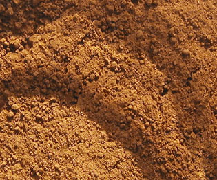

Les
terres

Cela se retrouve, par exemple, dans les nuanciers des fabricants de couleurs.
Une autre acception du mot désigne tous les pigments naturels ramassés,
effectivement, en terre. A ce titre, le jaune
de Naples, par exemple, peut être considéré comme une terre. Par
contre, certaines couleurs appelées "terres" n'en sont pas réellement. Il
s'agit en fait de produits d'origine végétale comme la terre de Cassel et la
terre de Cologne.
La terre verte
est bien minérale. Elle contient de l'oxyde de fer parmi d'autres composants
mais ne peut pas être considérée comme un oxyde terreux au même titre que
les ocres communs. Elle est donc classée à part sur ce site, à tort ou à raison.
Il en va de même pour les terres blanches,
très différentes chimiquement.
D'autres terres (dont les terres
de Sienne notamment, mais en fait la plupart des terres) comportent, outre
l'oxyde de fer, un oxyde de manganèse, des argiles
ou d'autres composants.
DANS L'ENSEMBLE, LES TERRES ONT UNE TENDANCE PRONONCÉE
À LA FLOCULATION.
Fabriquer
son propre pigment à l'aide de terres prélevées dans la nature
C'est
une opération qui n'est pas forcément très difficile à réaliser mais qui présente certains risques : que contient en réalité
telle ou telle terre prélevée ici ou là ? Quelle va être sa miscibilité, sa
permanence, son pouvoir absorbant, sa nocivité éventuelle ; quels agents auxiliaires utiliser pour
compenser tel ou tel aspect ? Vais-je pouvoir l'employer en peinture à fresque
? En peinture à l'huile ?
Un artiste qui cherche à limiter ces incertitudes peut enquêter dans la région, notamment auprès des artisans : cette terre a-t-elle servi à
enduire des murs ? A-t-elle déjà été exploitée pour la poterie, pour
l'artisanat, la décoration ? L'opinion d'un géologue peut également être
d'un précieux secours. Un premier contrôle avec du papier
tournesol donne déjà quelques précieux renseignements.
Toutes les terres
ne sont pas bonnes pour la peinture ni pour d'autres arts plastiques : ce
serait trop facile. Qui achèterait des
ocres s'il suffisait de se baisser pour en trouver ? Certes, des milliard
d'habitations ont été décorées avec ces substances depuis l'aube de l'humanité,
mais chaque région a développé un savoir-faire millénaire (extraction,
traitement, application, souvent définis en termes extrêmement précis) qui ne
doit pas, qui ne peut pas être dédaigné sous peine de désagréables
surprises.
Mal connue et mal traitée, une terre peut craqueler, se détacher
de son support, se fissurer, éclater à la cuisson (arts du feu) ou s'affaler lamentablement
(modelage), ne jamais parvenir à sécher (peinture à l'huile), entrer en
interaction avec d'autres substances, etc.
Un exemple de traitement ancien des
terres est disponible sur Dotapea. Voir
lévigation dans la page consacrée aux terres jaunes.
Voir
aussi Les terres blanches.
Lecture conseillée :
L'ocre sur Pourpre.com
Retour
début de page